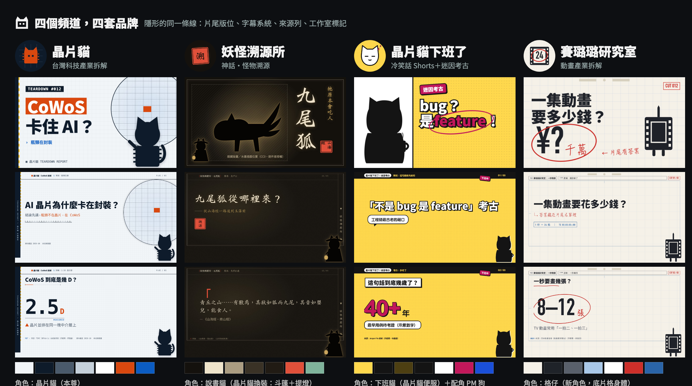
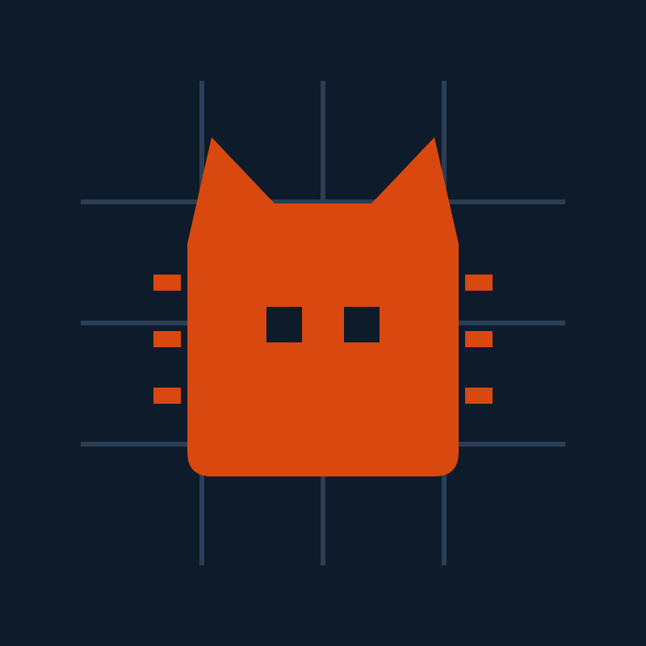
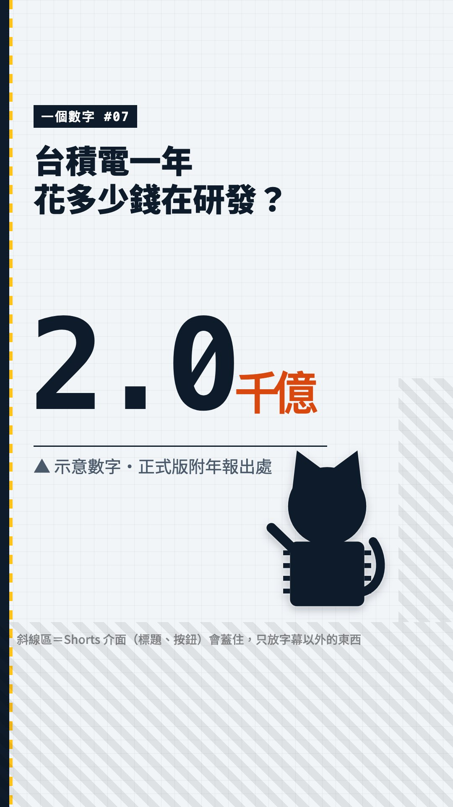
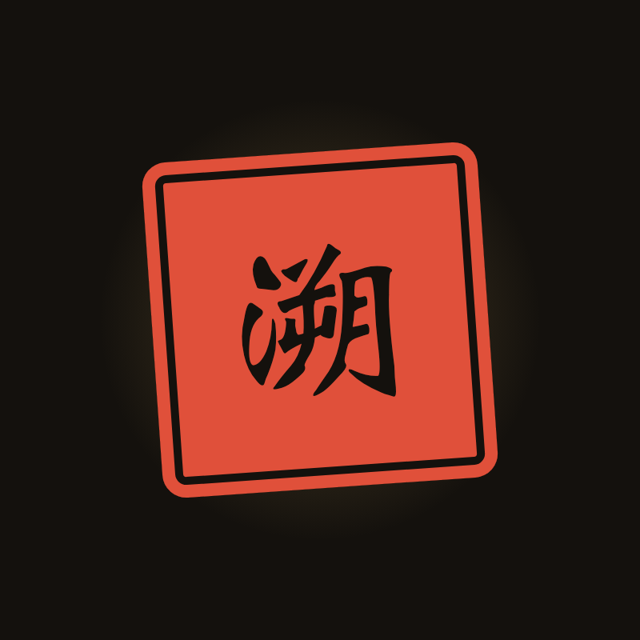
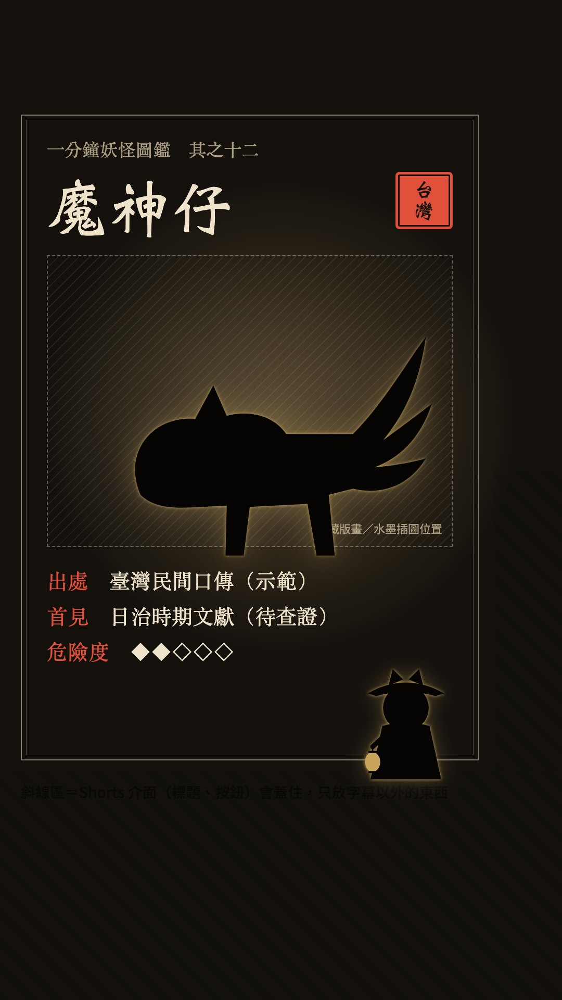
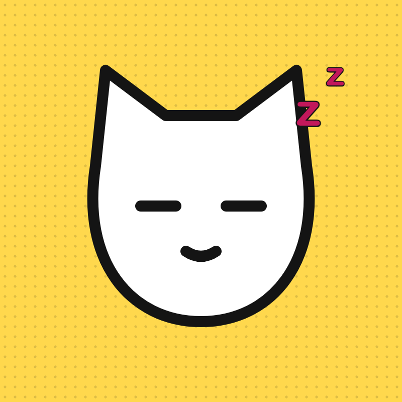
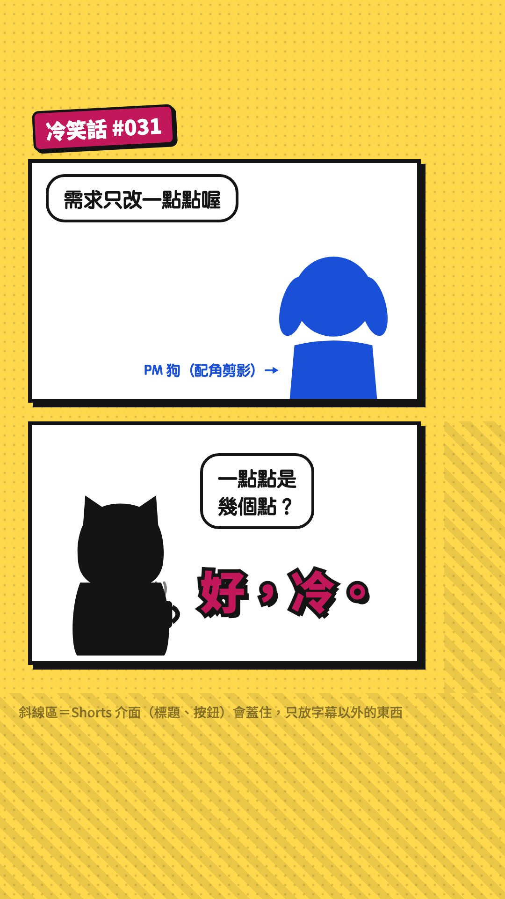
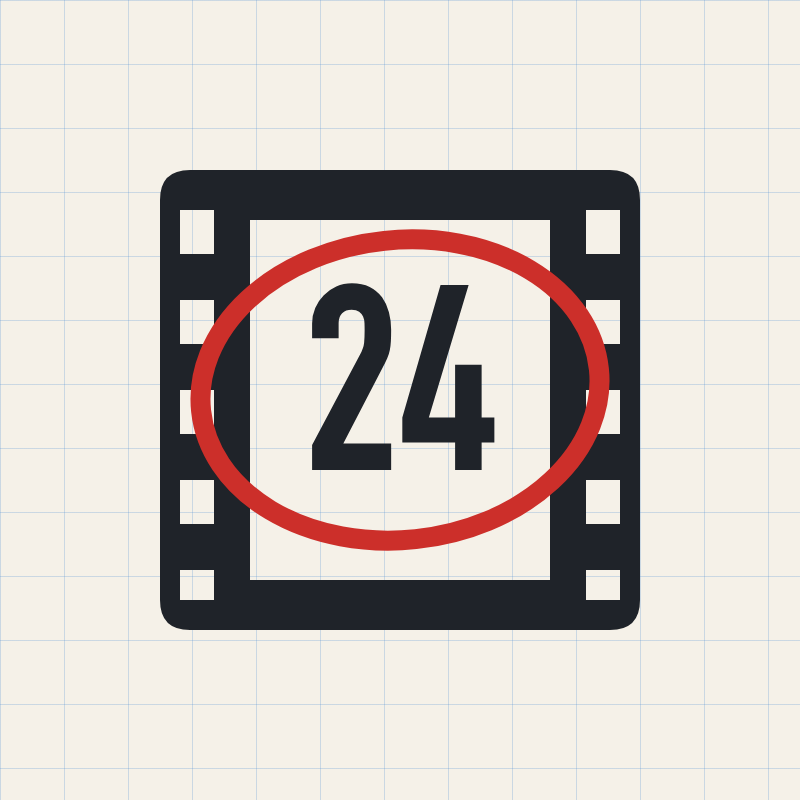
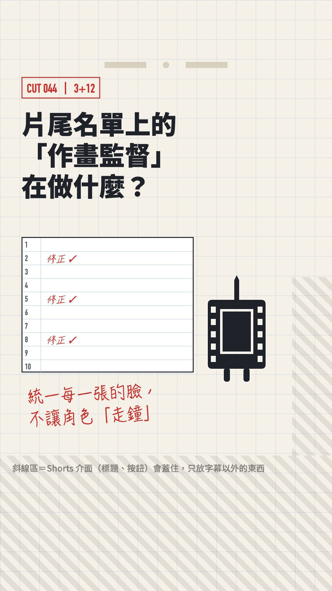

四個頻道的品牌系統（選稿）
以頻道為單位，不以單支影片為單位。每個品牌都用自己的樣式跑過真正的 explainer 模板（brand=<code>）。角色一律是剪影佔位；點圖看原尺寸。在每個品牌下方選名稱、按「採用／修改／不採用」，最後按右下角複製選擇。

隱形的同一條線：要，但只放在片尾
要有，但只放在「看完的人」才會看到的地方：片尾版位、字幕系統、來源列、工作室標記。片頭、縮圖、配色一律不共用。
四個頻道的觀眾幾乎不重疊（科技、神話、冷笑話、動畫），共用外觀只會讓每一個都變模糊；但片尾導流（A 頻道看完推 B 頻道）與製作流程需要一條共同骨架。
- 片尾 20 秒的版位完全相同：左邊兩支影片、右邊訂閱、底部 72 px 的工作室列（模板：templates/brands/endcard.html.j2）
- 字幕系統相同：底部 880–1080 px 安全區、白字黑邊、52 pt、每行 ≤ 24 字（沿用 explainer 既有規格）
- 來源列永遠在畫面上（左下 meta 列），每個品牌只換前綴：REF ›／※／來源：／CREDIT ›
- 工作室標記：「長了貓耳的方框」（templates/brands/studio_mark.svg），只出現在片尾與頻道簡介
- 共同敘事規則：先比喻、後定義；八卦必附來源
待決定：工作室名稱暫定「貓工所」，需要 Leon 決定（或不顯示名稱、只留標記）


① 台灣科技產業拆解 晶片貓
頻道名稱（YouTube 撞名查詢 2026-10-15）
個性、語氣、口頭禪
像一位會說冷笑話的工程師同事：先講結論，再拆原因；數字一定附出處。
- 「我是晶片貓，今天把〇〇拆給你看。」
- 「先講結論：」
- 「這個數字有來源，放在左下角。」
- 「拆完了，下一顆晶片見。」
不做：投資建議與漲跌預測；「狂」「絕了」等流行語；沒有來源的八卦
角色方向（美術另由 mascot worker 處理）
沿用晶片貓本尊（晶片身體＋貓頭）。參考方向：Kurzgesagt 的鳥（扁平、幾何、表情靠眼睛）、Duolingo 的 Duo（單一主色＋粗輪廓）。角色專屬色＝品牌強調色橘 #d9480f，讓「看到橘色就是晶片貓」。美術由 mascot-quality worker 處理。
示範投影片（真模板渲染，3 張）


版面檢查：無溢出、無侵入字幕區
從 slide-styles-10 怎麼改：取 cleanroom 的冷白與晶粒格、datajournal 的資料標註、blueprint 的尺寸線，重新定義成「拆解報告書」：左側裝訂邊（TEARDOWN REPORT）、黃光虛線、尺寸線取代裝飾線、SPEC-A／SPEC-B 標籤。
縮圖（3 款）


| 構圖 | 左 60% 文字、右 40% 晶圓＋晶片貓（貓手指向標題）；左上 TEARDOWN #編號 標籤。 |
|---|---|
| 字級 | 主標 2 行、每行 ≤ 6 字、132 px（1280×720 基準）；其中一個關鍵字用橘底白字反白。 |
| 色彩 | 冷白底＋墨藍字＋一塊橘；不用漸層、不用發光。 |
| 角色位置 | 右下，身高約畫面 55%，永遠指向關鍵字；右下角 160×60 留給 YouTube 時長標籤。 |
色彩（WCAG 對比由樣式表實算）
#f2f5f8 | 背景 | 無塵室冷白，所有長片底色 |
#0e1b2a | 主色（墨藍） | 標題、內文、裝訂邊、角色輪廓 |
#d9480f | 強調（晶片貓橘） | 唯一的強調色：關鍵字、結論、亮起的晶粒；對比 3.93 |
#0b5cc2 | 輔色（矽藍） | 第二資料系列、REF 前綴、小標；對比 5.77 |
#ffc21a | 裝飾（黃光） | 只當條紋與色帶，不當文字 |
#4a5a6b | 輔助字 | 頁尾、說明；對比 6.47 |
內文 fg/bg 15.88 ✓；輔助字 muted/bg（22 px 頁尾） 6.47 ✓；強調大字 accent/bg（數字、年份） 3.93 ✓；卡片內文 fg/card 17.37 ✓；次強調 accent-2/bg 5.77 ✓
字體、版型、動畫、轉場
| 標題 | Noto Sans CJK TC Black（字距 0、句子短） |
|---|---|
| 內文 | Noto Sans CJK TC Regular/Bold |
| 數字、標籤 | Menlo（等寬）（原定 SF Mono，但 Chromium 看不到，實際渲染是 Menlo，已改宣告） |
| 版型語言 | 報告書頁面：左 64 px 裝訂邊＋黃光虛線、頂部頁碼 P.01、標題下方是尺寸線；比較頁是規格表（SPEC-A／SPEC-B 方框）；大數字下有量測線與 MEASURED 標記；標題頁右側是一片晶圓，只亮一顆晶粒。 |
| 動畫語言 | 「量測」：等速、線性、無彈跳。數字像儀表跳到定值就停；線條由左往右畫出；晶粒一格一格亮。 |
| 轉場 | 黃光掃描：一條 8 px 黃光帶由左掃到右（0.4 s），帶過之處換頁。 |
| 片頭 | 3 秒：晶粒格一格亮起 → 中央那格變成橘色 → 長出貓耳 → 頻道名。所有影片共用，不放標題。 |
| 片尾 | 共用片尾版位，結語「拆完了，下一顆晶片見。」 |
Shorts 與長片


長片 8–10 分鐘報告書；Shorts「一個數字」：9:16、上方提問、中央一個超大等寬數字、晶片貓在下方，45 秒內講完一個數字的意義並導回長片。
頻道 icon、banner、片尾


Icon：墨藍底上一顆橘色晶片（兩側接腳）長出貓耳，兩個方形眼睛；縮到 24 px 仍可辨識。 Banner：冷白＋晶粒格，右側大晶圓；安全區內：晶片貓／一句話定位／更新時間。


② 神話・怪物溯源 妖怪溯源所
頻道名稱（YouTube 撞名查詢 2026-10-15）
個性、語氣、口頭禪
夜裡說書人：語速慢半拍、句子短，先唸原典再白話翻譯；恐怖感來自細節，不來自音效。
- 「今晚要查戶口的是……」
- 「先看出處。」
- 「注意，這時候牠還不是〇〇。」
- 「今日溯源，到此為止。」
不做：把民間信仰當笑話；原住民族傳說（只走共製路線）；生成可辨識的現代 IP 角色造型、神明神像
角色方向（美術另由 mascot worker 處理）
說書貓：晶片貓的 rig 換裝（斗笠、長斗篷、手提燈籠），重用骨架與表情 cue。在畫面上刻意縮小、站在角落，主角是妖怪本身（館藏版畫或非擬真水墨插圖）。參考：ゆっくり解説的固定立繪形式、《百鬼夜行繪卷》的構圖。
示範投影片（真模板渲染，3 張）


版面檢查：無溢出、無侵入字幕區
從 slide-styles-10 怎麼改：取 editorial 的襯線大標、newspaper 的印刷感與欄線，重新定義成「夜讀古籍」：黑底而非紙色底、古籍版框（雙線）、右側版心（直排頻道名＋魚尾）、朱印取代強調線、【注】取代說明框。
縮圖（3 款）


| 構圖 | 左 60% 妖怪（館藏版畫或水墨插圖），右側直排大標＋直排副標，右下朱印寫出處（山海經／台灣／日本）。 |
|---|---|
| 字級 | 直排主標 2–3 字、170–190 px，魏碑；副標楷體 44 px。 |
| 色彩 | 黑底、燈火金光暈、只有朱印是紅。 |
| 角色位置 | 說書貓縮到左下、身高約畫面 20%，提燈照向妖怪；妖怪才是主角。 |
色彩（WCAG 對比由樣式表實算）
#14110d | 背景（墨） | 所有畫面底色，加極淡的紙纖維雜訊 |
#efe4cb | 主色（宣紙） | 標題與內文；對比 14.9 |
#e0503a | 強調（硃砂） | 印章、出處、年份、圈點；對比 4.82 |
#7fb39b | 輔色（銅綠） | 第二系列、地名；對比 7.91 |
#c9a45c | 裝飾（燈火金） | 光暈、副標、細線；不當內文 |
#ab9d82 | 輔助字 | 版心、頁尾；對比 7.06 |
內文 fg/bg 14.9 ✓；輔助字 muted/bg（22 px 頁尾） 7.06 ✓；強調大字 accent/bg（數字、年份） 4.82 ✓；卡片內文 fg/card 13.5 ✓；次強調 accent-2/bg 7.91 ✓
字體、版型、動畫、轉場
| 標題 | Weibei TC（魏碑）（macOS 下載型字型，換機器要先確認） |
|---|---|
| 內文、數字 | Songti TC（宋體） |
| 注解、引文 | Kaiti TC（楷體） |
| 版型語言 | 古籍頁：雙線版框停在字幕區上方；右側 64 px 版心直排「妖怪溯源所」；標題頁的強調線換成「溯源」朱印；引文頁用「」與楷體；年表的點是硃砂圈。 |
| 動畫語言 | 「墨暈」：慢（0.6–0.8 s）、由模糊到清晰；文字逐行出現；燈籠光暈有極輕的呼吸（±3%）。 |
| 轉場 | 捲軸：畫面像卷軸由右往左捲過（0.6 s），或墨滴暈開轉場。 |
| 片頭 | 4 秒：黑畫面一滴墨落下暈開 → 變成「溯」字朱印 → 頻道名直排浮現。 |
| 片尾 | 共用片尾版位，結語「今日溯源，到此為止。」，底部加「本集登記：〇〇」戶口欄。 |
Shorts 與長片


長片 10–15 分鐘溯源；Shorts「一分鐘妖怪圖鑑」：直式圖鑑卡（插圖＋出處／首見／危險度三欄），只當導流，不單獨開台。
頻道 icon、banner、片尾


Icon：墨底上一方歪 4° 的朱印，白文「溯」字（魏碑）。 Banner：黑底燈火光暈，右側妖怪剪影；安全區內：頻道名（魏碑）／查戶口定位／更新時間＋「溯源」小印。


③ 搞笑：冷笑話 Shorts＋迷因考古 晶片貓下班了
判斷：兩者做成同一個品牌：Shorts 冷笑話小劇場是主力與導流，迷因考古是同一個角色「下班後」的長片。理由：同一個 IP（下班的晶片貓）同時累積角色好感；長片用簡報 pipeline 成本低；Shorts 推薦降權只打「搬運」，兩者都是自製。和①分開成兩個頻道，因為①的觀眾要的是可信度，冷笑話會稀釋它。
頻道名稱（YouTube 撞名查詢 2026-10-15）
個性、語氣、口頭禪
面無表情的冷面笑匠：鋪陳 → 停頓 0.6 秒 → 笑點 → 「叮」；從不解釋笑話。
- 「好，冷。」
- 「這不是 bug，是 feature。」
- 「下班。」
- 「一點點是幾個點？」
不做：嘲弄特定個人或族群；剪別人的影片或「配音描述」別人的影片；「狂」「絕了」等會過時的流行語
角色方向（美術另由 mascot worker 處理）
下班貓：晶片貓換便服（兜帽帽 T、馬克杯、半閉的眼睛）＋固定配角「PM 狗」（垂耳、藍色），兩者的對手戲是笑點引擎。參考：阿啾小劇場（角色即 IP）、Cyanide & Happiness（極簡造型靠節奏）。
示範投影片（真模板渲染，3 張）


版面檢查：無溢出、無侵入字幕區
從 slide-styles-10 怎麼改：取 collage 的貼紙與傾斜、pastel 的圓體字，重新定義成「便利貼漫畫」：螢光黃底、6 px 黑墨線、硬陰影（不模糊）、對話泡泡、網點、爆炸星 VS。
縮圖（3 款）


| 構圖 | 左 1/3 白底放下班貓的大表情（之後換成真正的表情圖），右 2/3 黃底放笑點字；左上一張分類貼紙（迷因考古／冷笑話）。 |
|---|---|
| 字級 | 2 行、每行 ≤ 5 字、112–132 px，白字黑描邊，其中一詞用粉紅。 |
| 色彩 | 黃＋黑＋白，粉紅只出現一次；手畫紅圈圈出關鍵字。 |
| 角色位置 | 左側、身高約畫面 75%，臉要大；表情是縮圖的主角。 |
色彩（WCAG 對比由樣式表實算）
#ffd84d | 背景（便利貼黃） | 所有畫面底色＋網點 |
#141414 | 主色（墨黑） | 輪廓線、文字、硬陰影；對比 13.32 |
#c2185b | 強調（吐槽粉） | 笑點字、數字、VS、貼紙；對比 4.25 |
#1a4fd8 | 輔色（配角藍） | PM 狗、第二系列；對比 4.81 |
#ffffff | 卡片白 | 對話泡泡、漫畫格 |
內文 fg/bg 13.32 ✓；輔助字 muted/bg（22 px 頁尾） 7.46 ✓；強調大字 accent/bg（數字、年份） 4.25 ✓；卡片內文 fg/card 18.42 ✓；次強調 accent-2/bg 4.81 ✓
字體、版型、動畫、轉場
| 笑點、標題 | Noto Sans CJK TC Black＋14 px 黑描邊＋硬陰影 |
|---|---|
| 對白 | Yuanti TC Bold（圓體） |
| 數字 | Arial Rounded MT Bold |
| 版型語言 | 漫畫格：每個區塊都有 6 px 黑框和 8 px 硬陰影、略為傾斜（±1°）；標題是白底黑框的貼紙；副標是對話泡泡；頂部黑色條＋「下班中」貼紙。 |
| 動畫語言 | 「彈」：pop（0 → 115% → 100%，0.25 s）、笑點時畫面抖動 2 幀、貼紙用 12 fps 的格數感出現。 |
| 轉場 | 硬切＋白閃 1 幀；或下一格漫畫從下方滑上。 |
| 片頭 | Shorts 不放片頭（第一秒就是鋪陳）；長片 2 秒：打卡鐘「叮」→ 下班貓摘工牌。 |
| 片尾 | Shorts：最後一格固定是下班貓喝咖啡＋「下班。」；長片共用片尾版位，結語「好，冷。下班。」 |
Shorts 與長片


Shorts 是主力：9:16 兩格漫畫（上格鋪陳、下格笑點），15–40 秒，每天一則。長片「迷因考古」用同一套黃色漫畫風的簡報（本頁三張示範投影片），8–12 分鐘，每週或隔週。
頻道 icon、banner、片尾


Icon：黃底、白臉黑粗輪廓的貓頭，眼睛是兩條橫線（半睡），右上兩個粉紅 z。 Banner：黃底網點，左邊下班貓，中間白字黑邊頻道名（「下班了」粉紅），下方對話泡泡寫內容，右邊貼紙寫更新時間。


④ 動畫產業拆解 賽璐璐研究室
判斷：選「動畫產業拆解」而不是雜學解說：動漫調查報告的推薦排序第一、不需要用原片（避開 2026-07 美國法院對解說頻道的判決與 Content ID 風險）、和①的拆解方法可以共用 pipeline；雜學解說太泛，品牌很難長出個性。
頻道名稱（YouTube 撞名查詢 2026-10-15）
⚠ 「動漫拆解室」已存在（8,800 訂閱），任何「〇〇拆解室」都避開。
個性、語氣、口頭禪
像一位當過製作進行的朋友：用片尾名單和製作文件講故事，不劇透、不評價作品好壞。
- 「一秒二十四格，今天拆第〇格。」
- 「這張表叫攝影表。」
- 「答案在片尾名單裡。」
- 「收工，原畫交出去了。」
不做：使用任何動畫原片、PV、官方角色圖或 AI 仿官方畫風；複述劇情；沒有出處的業界八卦
角色方向（美術另由 mascot worker 處理）
新角色「格仔」：底片格的身體、頭頂一支鉛筆當呆毛、短腿；不用晶片貓。理由：動畫迷對角色造型最敏感，一隻專屬角色比「換裝的貓」可信；也讓四個頻道不會全變成貓頻道。代價是要新做 rig。參考：Kurzgesagt 的物件擬人化、各家動畫公司吉祥物的簡潔度。
示範投影片（真模板渲染，3 張）


版面檢查：無溢出、無侵入字幕區
從 slide-styles-10 怎麼改：取 blueprint 的參考線、swiss 的粗黑體、chalk 的手寫筆跡，重新定義成「動畫用紙」：米色紙＋非照相藍格線、上方タップ穴、作画フレーム（藍色框＋中心標）、CUT 編號框、紅鉛筆修正圈與手寫註記、攝影表式的比較表。
縮圖（3 款）


| 構圖 | 米色格紙；左上主標 2 行，左下一個被紅圈圈住的巨大數字，右側格仔；右上 CUT 編號框。 |
|---|---|
| 字級 | 主標 2 行、每行 ≤ 5 字、110–120 px；數字 300 px DIN Condensed。 |
| 色彩 | 紙色＋鉛筆黑＋紅鉛筆，藍色只在格線。 |
| 角色位置 | 右側、身高約畫面 55%；絕不放任何作品的角色。 |
色彩（WCAG 對比由樣式表實算）
#f5f1e8 | 背景（動畫用紙） | 所有畫面底色 |
#1f2329 | 主色（鉛筆黑） | 標題、內文、框線；對比 14.0 |
#cc2f2a | 強調（紅鉛筆） | 修正圈、CUT 編號、手寫註記、重點數字；對比 4.65 |
#2a64a8 | 輔色（影色藍） | 標籤、第二系列、時間碼；對比 5.34 |
#a9c8e8 | 裝飾（非照相藍） | 格線、參考線、攝影表橫線；不當文字 |
#59606b | 輔助字 | 頁尾、欄位名；對比 5.63 |
內文 fg/bg 14.0 ✓；輔助字 muted/bg（22 px 頁尾） 5.63 ✓；強調大字 accent/bg（數字、年份） 4.65 ✓；卡片內文 fg/card 15.78 ✓；次強調 accent-2/bg 5.34 ✓
字體、版型、動畫、轉場
| 標題 | Noto Sans CJK TC Black |
|---|---|
| 數字、CUT、時間碼 | DIN Condensed Bold |
| 紅鉛筆註記 | HanziPen TC（翩翩體）（只用在短註記，不用在內文） |
| 版型語言 | 動畫用紙：頂部 3 個定位孔；表頭是「作品／SCENE／CUT」三格；內容在藍色作画フレーム內；大數字用紅鉛筆圈起來；比較頁是攝影表欄位（左右兩欄、逐列編號）；時間軸的節點是菱形關鍵格。 |
| 動畫語言 | 「一拍二」：所有動畫用 steps() 以 12 fps 播放，刻意不平滑；文字像逐格畫出；重點出現時紅鉛筆圈「畫」上去。 |
| 轉場 | 翻紙：下一張動畫用紙從定位孔處翻下來（3 格）；或白場 2 格。 |
| 片頭 | 3 秒：定位尺卡上 → 三張紙翻過（一拍二）→ 最後一張紙上紅鉛筆寫出頻道名。 |
| 片尾 | 共用片尾版位，結語「收工，原畫交出去了。」；來源以「片尾名單」形式滾動。 |
Shorts 與長片


長片 10–12 分鐘產業拆解；Shorts「一格冷知識」：直式動畫用紙＋攝影表欄位，一個職稱或一個數字講 40 秒。
頻道 icon、banner、片尾


Icon：米色格紙上一格黑色底片框，中間「24」，外面紅鉛筆圈。 Banner：動畫用紙全幅，安全區用藍色作画フレーム框起來：頻道名／一句話定位／更新時間（DIN）＋ CUT 001 框與格仔。